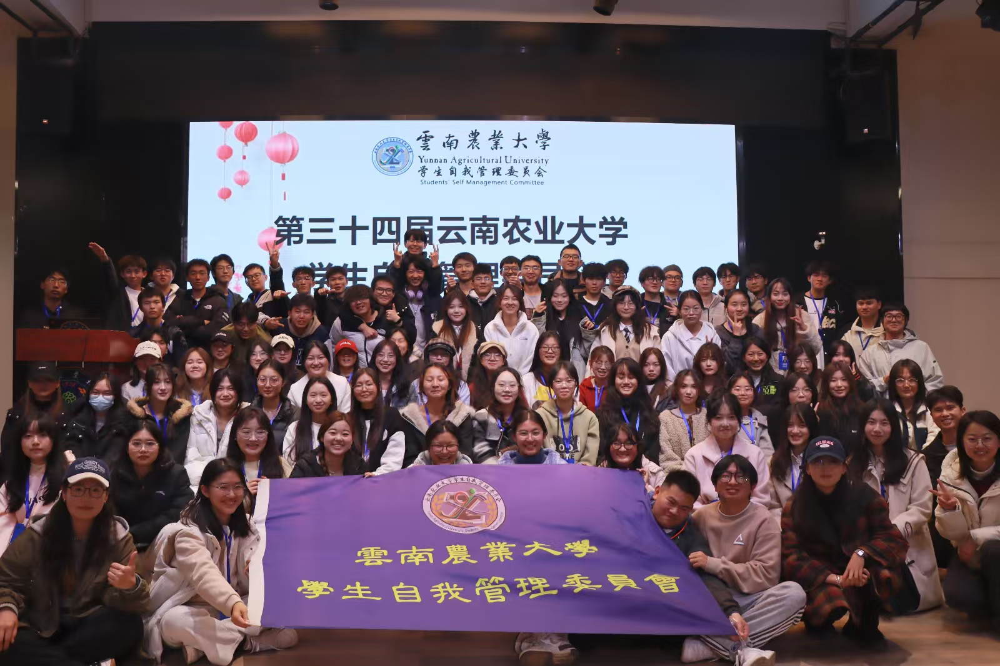
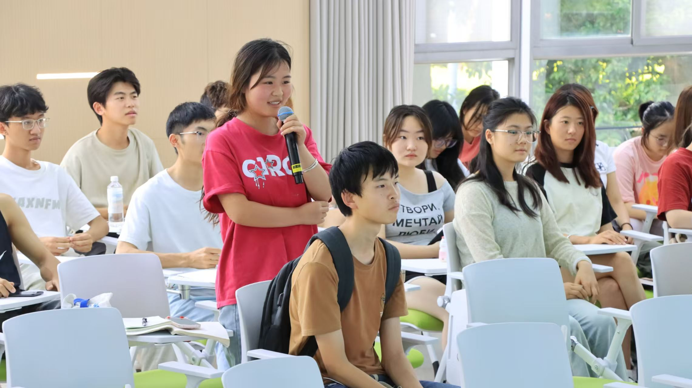
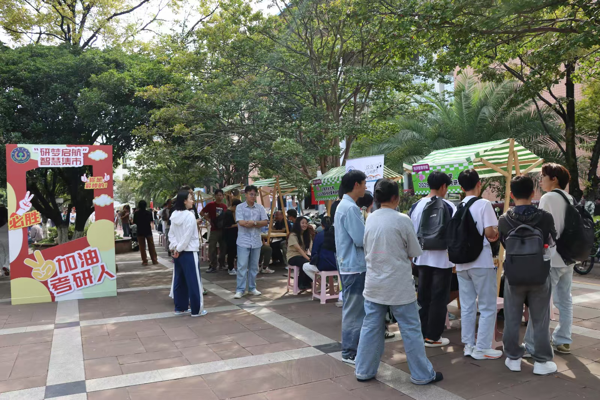
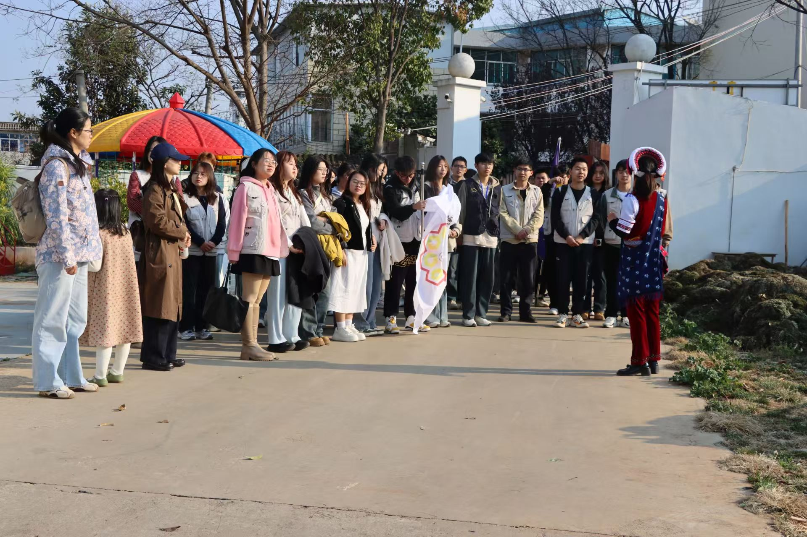
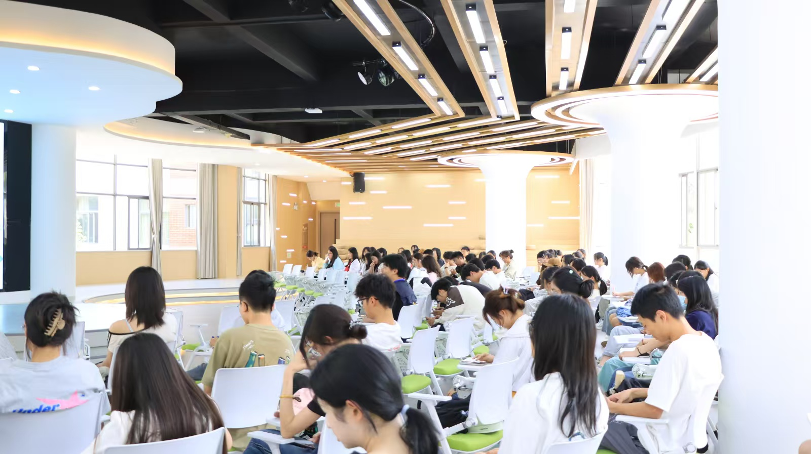
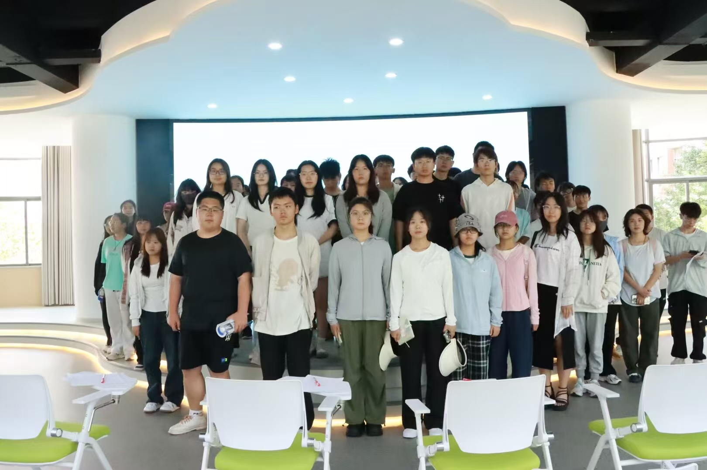
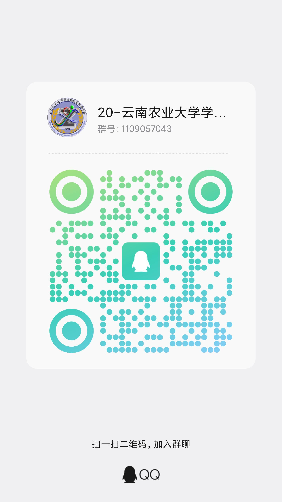

学习部
聚焦学风建设与学术活动，助力成长成才。

一｜组织简介
云南农业大学学生自我管理委员会，简称“自管会”，始创于1991年，是在学生处（学生中心）指导下开展工作的学生组织，也是学校历史最悠久的学生社团之一。
三十余年来，自管会始终秉持“自我管理、自我教育、自我服务、自我监督、自我发展”的宗旨，设有学习部、办公室、宣传部、生活部四个部门，围绕学校学风建设开展各项工作，打造了“耕读打卡”“千人晨读”“榜样面对面”等品牌活动，形成了服务同学、助力成长的鲜明特色。
未来，自管会将继续坚持服务同学、服务学校的发展理念，不断创新工作方式，提升组织活力，为学校学风建设和学生成长成才贡献青春力量。
二｜部门组成
以细致分工汇聚合力，让每一项学风建设活动有序落地。
聚焦学风建设与学术活动，助力成长成才。
负责海报、推文等宣传内容的策划与制作，扩大活动影响力。
负责文件起草、会议组织及活动签到。
保障活动运行，为活动顺利开展提供支持。
三｜精彩瞬间
求知、交流、分享、同行，记录自管会服务同学的日常印记。
四｜品牌活动
围绕理想信念、升学规划、耕读实践与朋辈分享，为同学提供扎实而温暖的成长支持。

2026年6月15日，学校学生处（学生中心）举办第三期“智启未来·书记、院长面对面”讲座，国际学院党委书记毕保良以“大学生视角下的政绩观”为主题授课，130余名学生参加。活动围绕大学使命与青年成长，引导学生树立正确价值观，坚定理想信念，提升责任担当。
查看学校学生处报道
学校举办研途·有你考研智慧集市暨2027届考研动员活动，20个学院优秀研究生代表、朋辈导师及考研学生共同参与。活动设置学院咨询、政策解读、经验分享、心理解压等板块，为学生提供一站式考研指导，帮助明确目标、增强备考信心，助力成长成才。
查看学校新闻网报道
学校学生处（学生中心）组织40余名师生赴西翥街道大村社区开展“耕读·初探”耕读教育活动，通过专题讲解、实地参观等形式，深入了解乡村振兴实践与历史文化，帮助学生提升实践能力和创新意识，厚植知农爱农情怀，激发服务乡村振兴的责任担当。
查看学校新闻网报道
学校学生处（学生中心）举办第十五期“智启未来·院长面对面”讲座，园林园艺学院院长杨正安教授以“高原特色园艺助推‘有一种叫云南的生活’”为主题授课，150余名学生参加。活动聚焦高原特色园艺与科技创新，引导学生将专业学习与服务地方发展相结合，增强知农爱农、服务乡村振兴的责任意识。
查看学校学生处报道
学生处（学生中心）举办“榜样面对面——2026年升学经验分享系列讲座”，面向2027届考研学子，邀请保研、考研、留学优秀学子分享升学经验。活动围绕择校规划、备考方法和经验交流开展，为学生答疑解惑，发挥榜样示范作用，助力明确目标、增强备考信心。
查看活动报道